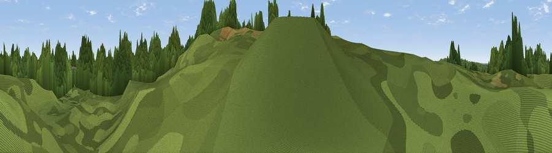

Thor's Rock
#42584 in England · top 86% of its area beats it · near ThurstastonThe view, rendered

A 360° render of this exact spot computed from the terrain model, tree cover and land cover — summer colours, afternoon light, calibrated against photographs of famous viewpoints. Real trees, hedges and buildings will differ in detail.
The panorama
Grey silhouette: terrain skyline in each direction (720 bearings, Earth curvature and refraction included). Dashed green: skyline with trees (+15 m) and buildings (+8 m) as obstacles. Blue strip: how far the ground is visible on each bearing.
Where the view opens
Wedge length = distance to the farthest visible ground on that bearing (vegetation-aware). Rings at 10, 25 and 50 km.
What fills the view
57% woodland · 26% grassland · 9% built-up · 5% water · 3% cropland
Angular shares of the visible panorama (visual magnitude), not map area. Landscape diversity 0.50 (0–1 Shannon).
Key numbers
More beautiful places nearby
The staircase of upgrades: each row has a higher view potential than everything closer. Driving times are estimates from straight-line distance, calibrated against real road routing — check an actual route before setting out.
| Place | Direction | Drive | Score |
|---|---|---|---|
| Thurstaston Hill | S · 0 km | ~1 min | 66.8 |
| Viewpoint near Caldy | WNW · 2 km | ~6 min | 68.0 |
| Helsby Hill | ESE · 26 km | ~42 min | 74.6 |
| Beacon Hill | ESE · 29 km | ~45 min | 77.3 |
| Viewpoint near Harthill | SE · 40 km | ~59 min | 80.5 |
| Rivington Pike | NE · 49 km | ~70 min | 81.9 |
| White Brow | NE · 50 km | ~71 min | 82.9 |
| Viewpoint near Halfway House | S · 72 km | ~95 min | 83.3 |
53.35588, -3.13619 · source: osm viewpoint · position refined by local search. Computed location — check access rights before visiting.